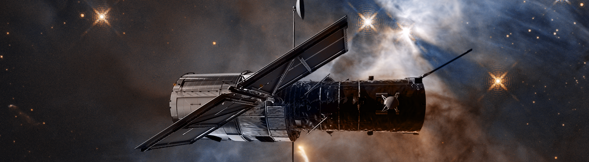

Hubble Space Telescope
By Jakob Ayers
Hubble Space Telescope

About the Telescope
- Cassegrain reflector telescope
- Owned by nasa
- 7.8 foot lense
- Orbits Earth
Light
- Observes visible light and a portion of the infrared and ultraviolet spectrum
- Infrared light can penetrate more things, as it has a larger wavelength
- Ultraviolet light is mostly blocked by earth's atmosphere
- since Hubble is in space, it can see more ultraviolet light